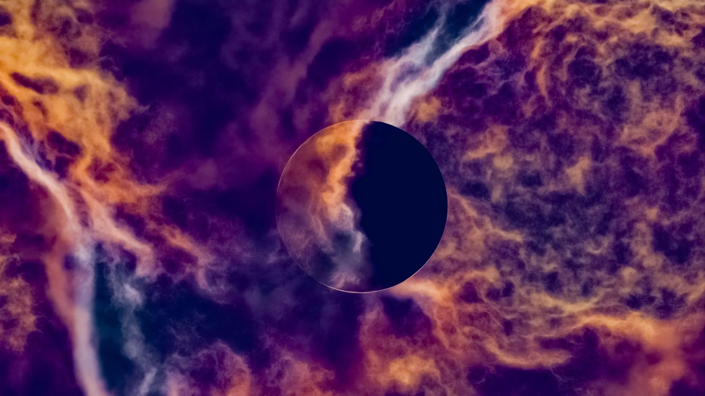

You can finally exhale. After three weeks of chaotic travel delays, misunderstood texts, exes rising from the dead, and technology acting like it has a personal vendetta against you, Mercury Retrograde is officially coming to an end.
As the planet of communication, intellect, and timing stations direct (moving forward in the sky), the thick cosmic fog begins to lift. Because this recent retrograde journey heavily featured the deep, intense waters of Scorpio, the last few weeks have likely felt like an emotional excavation. Secrets may have surfaced, financial boundaries were tested, and intimate relationships underwent serious stress tests.
But as Mercury regains its forward momentum, the confusion transforms into absolute clarity. Here is what is coming next and how the zodiac will feel the shift.
What to Expect: The “Retroshade” Period
Before you immediately sign a massive contract, launch a new business, or send a risky text, you need to know about the retrograde shadow (affectionately known by astrologers as the retroshade).
Even though Mercury is moving forward, it takes a couple of weeks for the planet to regain its normal speed and re-trace the exact path it just walked backward over. Think of it like a groggy person waking up from a nap: they are awake, but you probably shouldn’t ask them to solve a math problem right away. Use the next two weeks to slowly implement the lessons you learned during the retrograde, rather than rushing into impulsive action.
What’s Next for Your Element
The end of this retrograde affects everyone differently depending on where it hit your birth chart. Here is a breakdown of what the four astrological elements can expect as the energy clears:
Water Signs (Scorpio, Cancer, Pisces): Emotional Closure
You felt this retrograde in your soul. It likely dragged up old emotional wounds, tested your psychic boundaries, and forced you to confront relationship dynamics you were trying to ignore. As Mercury moves forward, you will finally experience a profound sense of closure. The conversations that felt impossible to have two weeks ago will suddenly flow with ease, and your intuition will return to its razor-sharp baseline.
Earth Signs (Taurus, Virgo, Capricorn): Practical Momentum
Earth signs despise inefficiency, making retrogrades incredibly frustrating for you. You have likely been dealing with delayed payments, stalled career projects, or logistical nightmares. The green light is finally here. The money that was held up will process, the contracts will finally make sense, and the career moves you have been plotting behind the scenes will start gaining actual, tangible traction.
Air Signs (Gemini, Libra, Aquarius): Communication Reset
Mercury is the ruling planet for Gemini, meaning air signs always take a direct hit when it goes retrograde. The endless miscommunications, typos, and social friction are over. Your natural gift for networking and witty banter is fully restored. This is the time to clear the air with friends, hit “send” on the important emails you’ve been sitting on, and get back to socializing without fear of saying the wrong thing.
Fire Signs (Aries, Leo, Sagittarius): Reignited Passion
This retrograde likely felt like someone threw a wet blanket over your creative spark. You may have felt unusually sluggish, uninspired, or blocked in your romantic life. As Mercury stations direct, your natural fiery momentum returns. The creative blocks will shatter, and you will suddenly feel the urge to take bold action, plan your next big adventure, and step back into the spotlight.
Sources & Further Reading
- Astrology.com: “What Happens When Mercury Goes Direct?”
- The AstroTwins / Astrostyle: “Mercury Retrograde Shadow Phase Explained”
- Cafe Astrology: “Mercury Transits and Retrograde Cycles”